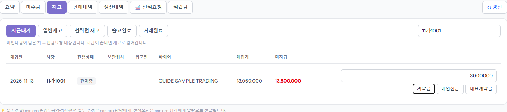
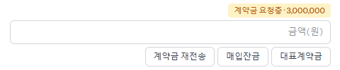
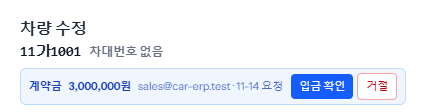
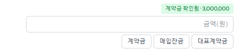
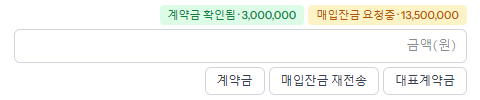
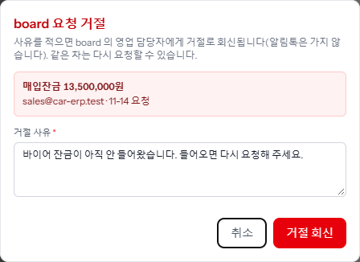
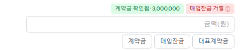
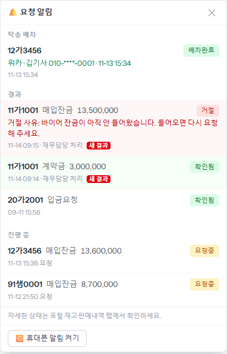

딜러에게 돈을 보내 달라고 ERP 재무에 알리는 기능입니다. 「내 정산·미수·선적」 → [재고] → [지급대기]에서 차 줄마다 [계약금]·[매입잔금]·[대표계약금]을 누릅니다. ERP 가 확인하거나 거절하면 결과가 그 줄의 칩과 오른쪽 위 종(🔔)에 옵니다. 카톡으로 따로 말하지 않아도 됩니다.
지급대기에는 딜러에게 줄 돈이 남은 차만 나옵니다. 오른쪽 검색칸에 차량번호를 넣으면 그 차만 남습니다. 줄 오른쪽 「금액(원)」 칸에 보낼 금액을 적습니다.

ERP 재무 담당에게 알림이 갑니다. 칩에 종류와 금액이 같이 나오니 맞게 갔는지 확인하세요. 같은 종류를 또 누를 수는 없고, 버튼은 [계약금 재전송]으로 바뀝니다(아래 「재전송」).

ERP 「차량 관리」에서 그 차를 열면 맨 위에 요청 줄(종류·금액·요청한 사람·날짜)이 보입니다. 영업이 할 일은 없습니다. 기다리면 됩니다.

칩이 초록으로 바뀌고 종에 「새 결과」가 뜹니다. 버튼은 다시 [계약금]으로 돌아옵니다.

칸을 비우면 「남은 잔금 전액 OO원(매도비 포함, ERP 미지급 기준)으로 요청합니다」 확인창이 뜹니다. 금액이 맞으면 [확인]. 계약금 요청이 아직 열려 있으면 그 금액도 같이 알려 주니, 두 번 받지 않게 금액을 직접 적으세요.

바이어 돈이 아직 안 들어왔을 때처럼 지금 보낼 수 없으면 ERP 재무가 [거절]을 누르고 사유를 적습니다. 거절은 알림톡 없이 board 로만 옵니다.

칩의 ⓘ 를 누르거나 오른쪽 위 종을 열면 사유가 그대로 보입니다. 사정이 풀리면 같은 차에 다시 요청하면 됩니다.


요청이 열려 있는 동안에는 버튼이 「재전송」으로 바뀝니다. 누르면 차량·종류·금액·회차를 보여 주는 확인창이 뜨고, 같은 내용을 한 번 더 알립니다. 금액칸을 비우면 처음 금액 그대로, 적으면 그 금액으로 바꿔 보냅니다. 칩에 「재전송 N/5」가 붙고 5번까지 됩니다.
보내는 내용은 계약금과 같고, 받는 사람만 시간과 상관없이 대표로 정해져 있습니다. 담당자가 휴가·외근이라 급할 때 씁니다. 일반 계약금과 따로 세는 요청이라 둘 다 열려 있어도 됩니다.